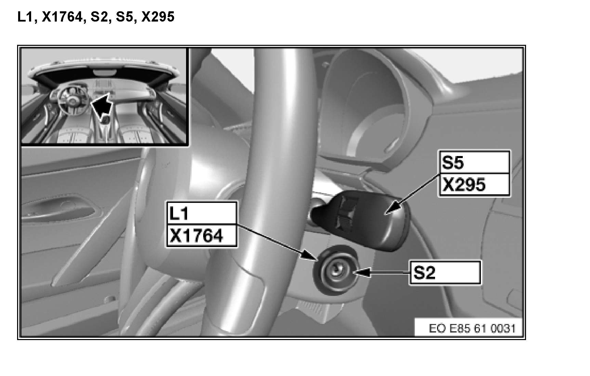

Operation CHARM
: Car repair manuals for everyone.
Home
>>
BMW
>>
2007
>>
X3 3.0si (E83) L6-3.0L (N52K)
>>
Repair and Diagnosis
>>
Locations
>>
Component Locations
>>
A - Z Component List
>>
L_Coils
>>
L1 EWS Toroidal Coil
>>
L1, X1764, S2, S5, X295 (Z Series_Z4-E85/86)
L1, X1764, S2, S5, X295 (Z Series_Z4-E85/86)
